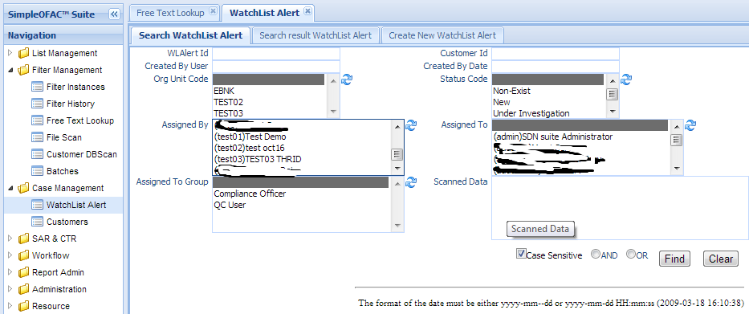
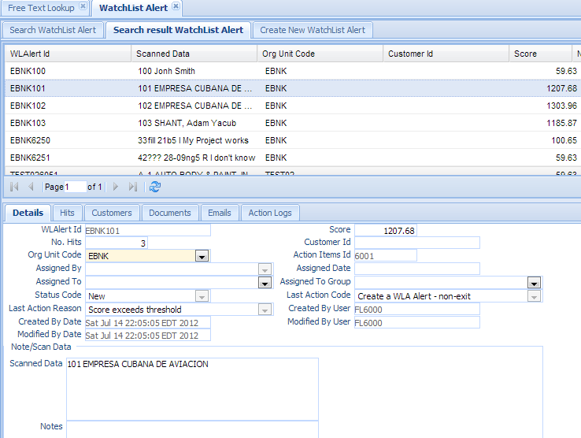
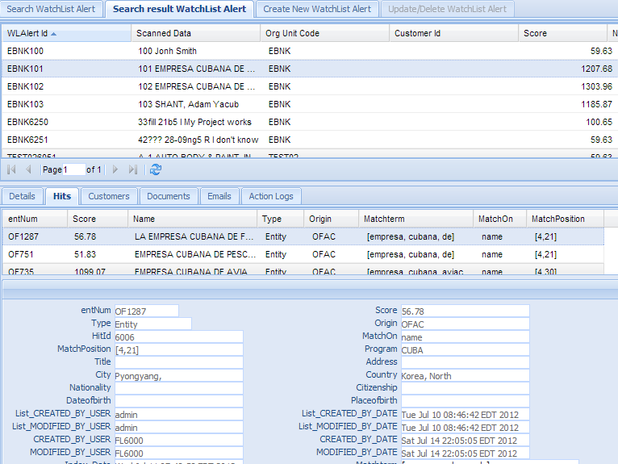
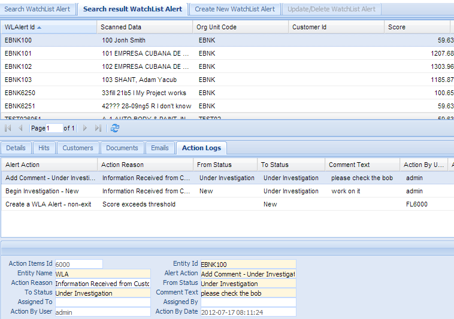
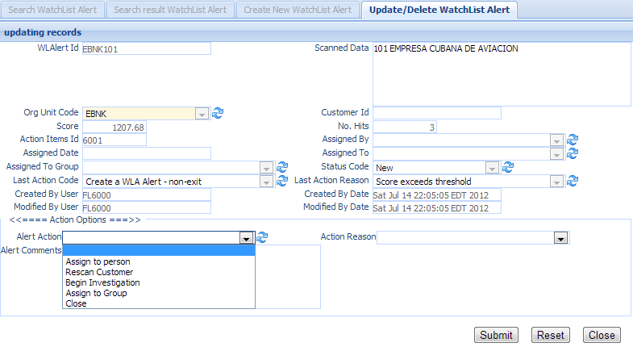
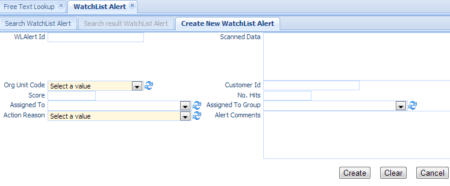

WatchList Alert¶
Users scan the customer data via File Scan or customer dbscan in the screening Management. The screening result is loaded into watchlist alert database for review. This function is used to search watch list alert and make a decisions on it.
Click the WatchList Alert in the left navigation menu under Case management, a new WatchList Alert Tab folder will be created in the right panel. There are 3 sub-Tab folders, Search WatchList Alert, Search Result WatchList Alert and Create New WatchList Alert.
Search WatchList Alert¶
Search Criteria
| Field Name | Description |
|---|---|
| WLAlert Id | This is the unique number for the watch list alert entry in the system. |
| Customer Id | Used only when use customer dbscan. |
| CreatedByDate | Date and Time when this entry is created |
| CreatedByUser | User who create this entry. |
| OrgUnit Code | select values from the dropdown list. |
| Status Code | select values from the dropdown list. |
| Assigned By | select values from the dropdown list. |
| Assigned To | select values from the dropdown list. |
| Assigned To | select values from the dropdown list. |
| Group | |
| AND | Select AND radio box if you want those criteria add together. |
| OR | Select OR radio box if you want to get the result if either criteria meet |
Functional buttons¶
- Find: – click Find button to search.
- Clear:– click Clear button to clear all the criteria.
Search Result WatchList Alert¶
The top part is the table, shows the list of the watch list alerts that meet the search criteria. The bottom part is the details, Hits, Customers, Documents, Emails, and Audit Logs of the selected entry.
Each alert has one to many hit, a hit is created when the name or alias of the sanction list match all or part of customer name. The Hit detail screen shows all the information from the sanction list.
Alert Audit Log with action name, action reason, from status, to status, comment, action by, and action date.
Update/Delete WatchList Alert¶
Double Click the selected record in the table to modify this entry. A new Tab folder “Update/Delete WatchList Alert” will be added, as show below.
Functional buttons¶
- Action Dropdown list: – depends on the current alert status and user’s permission. It will show a list of action the user is allowed to perform. Select one of the action from the dropdown list. Typically, Users can add a comment, add document, remove a document, assign to person/group, close it (Not a match, or true match), escalated to Compliance officer, etc. Those actions are configured via workflow; Users are able to toiler to meet their own business process. Please see Workflow section for details.
- Action Reason Dropdown list :– Select one of the action reason from the dropdown list.
- Alert Comments:– Free text box to allow user to input the comments of this action, Comments will show in the action logs.
- Submit:– Perform this action, the pop down will show, indicating success or failure. Depends on the action performed, it may change the action status. It will stay in this page to allow user to perform another actions
- Reset:– reset the data to its initial value, discard all the changes.
- Close:– Cancel this change(if any) and close this page and switch back to “Search result WLA alert” Tab.
Create New WatchList Alert¶
Select the “Create New WatchList Alert” Tab to create a new entry.
Note
Normally Watchlist alerts are created by File Scan or Customer DBScan.
| Field Name | Description |
|---|---|
| WLAlert Id | This is the unique number for the watch list alert entry in the system. |
| Scanned Data | The data that is scanned by the screenign engine |
| Customer Id | Used only when use customer dbscan. |
| OrgUnit Code | select values from the dropdown list. |
| Assigned By | select values from the dropdown list. |
| Assigned To | select values from the dropdown list. |
| Assigned To | select values from the dropdown list. |
| Group | |
| Action Reason | select from the dropdown list |
| Alert Comments | Free text area to allow user to add comments. |
Functional buttons¶
- Create: – Click the Create button to create a watch list alert and switch to “Search result WatchList Alert” Tab.
- Clear:– Click the Clear button to clear all the fields
- Cancel:– Click the Cancel button to cancel operation and switch back to “Search result watchlist alert” Tab.